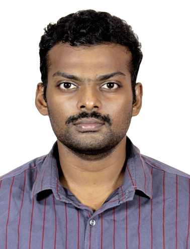

PRABHU SINGH JEBARSON R
Current Location: Bangalore, Karanataka
Mobile no: +91 9445673392
Email ID: rprabhusingh.j@gmail.come
Experience: 2.5years (Automotive domain)
Summary
Highly skilled CAE Analyst with over 2.5 years of experience specializing in Automotive Engineering & simulation.
Proficient in using CAE tools such as Hypermesh with NX Nastran & Abaqus as solver deck for pre-processing activities as well as HyperView, NX Nastran for post-processing activities to perform Structural static & dynamic, NVH, Impact analysis on automotive components & systems for performance, efficiency & safety in design.
Educational Qualification
BE in Mechanical Engineering from R.M.K Engineering College affiliated to Anna University with 9.07 CGPA.
Current Assignment
Employer: TCS (TATA Consultancy Services Limited)
Designation: Systems Engineer
Duration: From Oct 2022 to present
Roles & Responsibility
- I have performed NVH, Impact, Durability, Modal, Response Analysis for component level parts in Brakes, Steering, VDC, Wheel.
- Mainly for Brakes, I have performed Modal, Frequency Response, Deformation analysis on Splash Guard for design optimization, Backplate, Caliper, R-Tank Bracket, Torque member, e-power support plate.
- For Steering, I have performed Frequency Response, Impact analysis on Heat shield/protector, Steering column, CCB bracket, Steering Wheel, Gear Suspension member, Design optimization for Lower joint Steering yoke, Hole cover displacement analysis.
- For Wheel, I have performed DRR RRR analysis as well as Stiffness analysis
- Cross functional collaboration with design team as well as to communicate simulation results effectively to cross-functional teams, stakeholders/clients from OEM translating technical findings into actionable insights
- I have been responsible for VAVE activities in my team for automating repeated activities, report creation etc.,
- I have provided guidance and mentorship to new joiners on CAE activities as well as conducted commodity training sessions to enhance team overall technical skills
- I have stringently been compliant to OEM standards as well as done certifications to upgrade myself to industry/corporate standards
- I have also been involved in other commodity teams for design as well as CAE support.
Software & IT Skills
- HYPERMESH
- NASTRAN
- ABAQUS
- HYPERVEIW
- UG NX 12
- SPACE VISION
- PYTHON
- MS EXCEL & POWERPOINT
Other